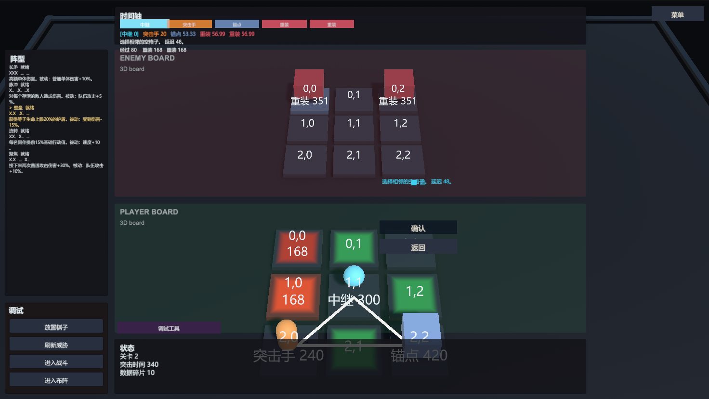
A short tactics demo on two facing 3×3 boards. One placement changes safety, formation, and who acts next.
I started from one question: how much can a very small board do if the same position matters to several systems at once?
I did not want the demo to feel deep because every character had a long skill list. That can work, and it also makes it harder to tell which rule is actually doing the work. I wanted the rules small enough to take apart, tune, and read before the player commits.
Three characters share one Action Value timeline. Where they stand decides the formation. Where the enemies stand decides which cells are dangerous. The action they spend decides how long they wait before they act again. A run is Stage 1, a shop, Stage 2, another shop, a boss, and a score that comes from how the run was played.
The moment I want is a small move that fixes more than one thing. Anchor steps off a threatened tile, the party completes a formation, and the step still costs less time than an attack. That is a better turn than pressing whichever button shows the biggest number.
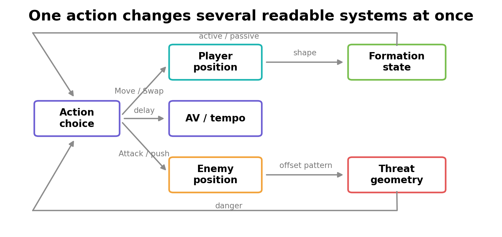
So the question in play is not “which ability is strongest?” It is “what change to the current state is worth the cost?”
Stage 1 and Stage 2 keep sending groups while Assault Time remains. Clearing quickly reaches more groups, more Data Shards, and more score. Attacking twice every activation is not always the best answer. Formations pay score, damage, and buffs. A cheap move spends less of the stage. A downed character costs both score and stage time.
The goal is not “kill as fast as possible.” It is to clear efficiently, use a formation when it is worth it, keep the team alive, and finish the boss with as much score as that play earned.
A turn is direct. Read the timeline and the threatened cells, choose a labelled action, pick a target or tile if it needs one, then Confirm. After the first action, spend the second slot or end the activation. On the timed stages the timeline also shows Assault Time remaining, and hovering a command shows its AV cost before commit. Escape opens and closes the menu.
The board is small on purpose: a 3×3 player grid facing a separate 3×3 enemy grid. With three characters, every occupied cell matters, and there is still room to rearrange without turning the game into pathfinding.
Striker, Relay, and Anchor share Attack, Move, Swap, Block, and Item. They differ by HP, ATK, and Speed. I wanted the same rules to feel different depending on who uses them, instead of a private mini-system for each character.
| Character | HP | ATK | Speed | Base AV | Role |
|---|---|---|---|---|---|
| Striker | 240 | 100 | 100 | 100 | Highest damage. Attacking is expensive, and it is worth it. |
| Relay | 300 | 70 | 125 | 80 | Fastest. The easiest piece to reposition often. |
| Anchor | 420 | 80 | 75 | 133.33 | Highest HP. Slow, and the safer body to leave in a bad cell. |
Moving Relay instead of Anchor is not a new rule. It is the same choice with a different cost. Relay comes back sooner. Anchor gives up more time, and he is harder to remove if he stays in danger. That is enough to make the pieces feel different.
A Move does not only change a cell. It changes when that character returns, what formation the team is holding, and sometimes which attack does not happen this activation.
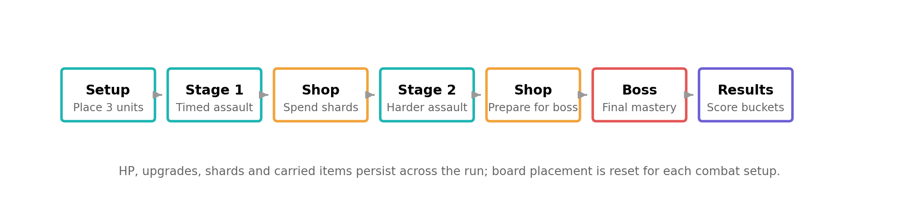
At the start of each combat stage the three characters are placed before the clock starts. Position resets. HP, upgrades, Data Shards, and carried items do not. I kept the content count low: three player units, three normal enemy archetypes, five formations, two timed stages, three consumables, and one boss. If I needed more depth, I would rather make those pieces interact than add another system.
The shared Action Value timeline is what makes every action a timing decision. I did not want the cost of Move or Attack to disappear into a hidden cooldown. If I choose something expensive now, I want that choice visible in the next few turns.
Base AV is 10000 / Speed. Whoever has the lowest Current AV acts next. Time advances until that actor reaches 0, and the delay of the actions they took is added back when the activation ends. If two actors are equally ready, the faster one wins the tie.
For the player, faster characters come back sooner. Every action pushes that character back by some fraction of their own Base AV. Using both slots gets more done now, and it pays both costs before that character returns.
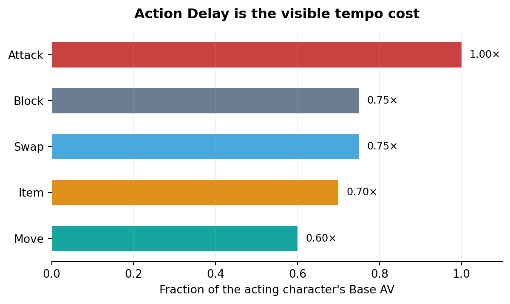
| Action | Delay | What it pays for |
|---|---|---|
| Attack | 1.00× Base AV | Damage, and an optional one-cell push. |
| Move | 0.60× | Cheap reposition on the player board. |
| Swap | 0.75× | Exchange places with an adjacent ally. |
| Item | 0.70× | Spend one of the team’s limited consumables. |
| Block | 0.75× | Reduce damage until the next activation. Ends the activation immediately. |
Relay has 125 Speed, so Base AV is 80. A Move costs 60% of that, 48 AV. An Attack costs the full 80. Move and then Attack in the same activation pays both. More happens now, and the next turn comes later than if Relay had moved and stopped.
The timeline chips always show the real current order. During Stage 1 and Stage 2 the same panel also shows Assault Time left. Those are different questions: who acts next, and how much of the stage remains. Hovering an action shows its AV cost. Once Move, Swap, or Attack is fully specified, a text preview can show the predicted order. The real clock does not move until Confirm.
One action per turn would have been cleaner, and it would have removed the sequences I wanted: Move then Attack, Attack then reposition, or Move once and stop so the character comes back sooner. Two slots let those sequences exist without making them free. The player can still end after the first non-Block action.
Items use the same action economy. They are not a free menu. Overclock multiplies the next action’s delay by 0.7. Flow can advance the other allies and grants +10 Speed while the shape is held. That Speed bonus makes later costs cheaper. It does not rewrite Current AV that is already on the timeline.
Normal attacks have no critical chance, no damage roll, and no Defense stat. A hit deals the attacker’s current ATK after the modifiers that are already on screen. A directional attack can also push the target one orthogonal cell. If that cell is blocked or off the board, the damage still lands and only the push fails. I wanted mistakes to come from the decision, not from the game rolling a worse number than the one the player just read.
The part I like most is that the two boards care about position for different reasons. The player side asks “what shape am I making?” The enemy side asks “which cells become dangerous from here?” Move and Attack are what connect those questions.
A formation only cares about the three occupied player cells. It does not care which character stands on which mark. Rotation, reflection, and translation are the same pattern. I wanted the player to read a shape, not memorise one exact picture.
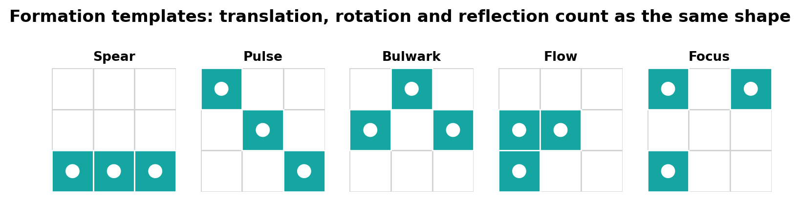
Each formation has a passive that stays on while the shape is held, and an active that fires once when the team enters a ready formation. Leaving and coming back does not refresh it. It becomes ready again when a new normal enemy group starts, and during the boss it refreshes after each body attack. Starting a stage already inside a formation gives the passive, not the active. Hold the shape for the passive. Enter it at the right time for the burst. The formation belongs to the team, not to whichever character moved last.
| Formation | Shape | Active, once per ready window | Passive, while held |
|---|---|---|---|
| Spear | Three in a line | Choose one enemy. Heavy single-target hit at 1.8× Formation Power, and the +10% single-target passive applies. | +10% single-target damage. |
| Pulse | Diagonal | Damage every active enemy at 0.65× Formation Power. | +5% team ATK, already included in that active. |
| Bulwark | Wedge | Each ally gains Shield equal to 20% of Max HP. | Incoming damage ×0.85. |
| Flow | An L of two plus one | Advance the other allies. The actor stores that tempo credit. | +10 Speed, which changes Base AV while held. |
| Focus | Two corners and one offset | The next two normal attacks deal +30% damage. | +10% team ATK. |
Formation Power is the team’s average current ATK, not the ATK of the character who happened to complete the shape. If Relay completes the same shape as Striker, the payoff should not suddenly be a different system.
Normal enemies do not secretly pick a new attack shape every turn. Each archetype has a fixed danger pattern around its current cell, and pushing the enemy moves that pattern with it. A directional attack is damage plus a relocated threat.
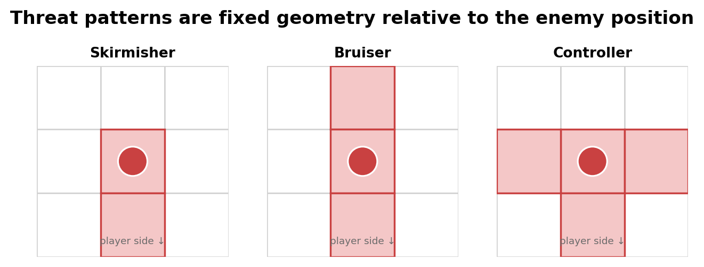
| Enemy | HP | Damage | Speed | Threat |
|---|---|---|---|---|
| Skirmisher | 120 | 60 | 115 | Fast and narrow. Its own cell, and one cell toward the player. |
| Bruiser | 260 | 140 | 65 | Slow. A column of three: behind, on, and in front of itself. |
| Controller | 180 | 90 | 90 | Wider. Its own cell, both side cells, and one cell toward the player. |
When I push an enemy, I am moving its red area. The useful question is often not “where do I want the enemy?” It is “which cells do I want to make safe?”
Stage 2 reuses the same three enemies with stronger numbers: HP ×1.35, damage ×1.20, Speed +8. The knowledge from Stage 1 stays useful. The pressure goes up. The rules do not change.
Once combat works on its own, the run gives those small decisions a longer consequence. Time, deaths, score, and the shop all ask the same thing: how much do I spend now, and what am I giving up later?
Assault Time falls as the shared timeline moves, so a slower action literally eats more of the run. Clearing a group refunds 90. If the timer hits 0, the current group is still finished, and it becomes the last one. Remaining time is shown in the timeline panel on these two stages, then disappears for the boss, because the boss does not use that clock.
That is another reason not to Attack twice every turn. A cheap Move can fix the board without spending as much of the run. Slow play and deaths leave less time for later groups.
| Stage | Starting time | Clear refund | Down penalty | Enemy scaling |
|---|---|---|---|---|
| Stage 1 | 450 | +90 | −100 | Base values. Four predefined groups. |
| Stage 2 | 420 | +90 | −100 | HP ×1.35, damage ×1.20, Speed +8. Four predefined groups. |
At 0 HP a character returns at 10% Max HP, minimum 1, keeps their Current AV, and stays on the timeline. A down costs 300 score. On the timed stages it also costs 100 Assault Time. A mistake should hurt without deleting a character and breaking the rest of the run.
Score is not a checklist sitting on top of combat. It pays the things the rest of the game is already asking for: reach more groups, find useful formations, stay alive, and finish. Assault Time matters indirectly, because every extra group is another chance at kills, shards, and formation score.
| Score source | Value | What it pushes toward |
|---|---|---|
| Normal enemy defeat | +100, and +5 Data Shards | Clear more groups. A boss part scores, and does not grant shards. |
| Formation award | +250 | Once per formation per enemy group. Rewards changing shape, not only attacking. |
| Boss clear | +500 | Finish the run. |
| Remaining HP | Up to +100 per living character | round(current / max × 100). A full bar is 100. Stay healthy instead of trading HP away for speed. |
| Character goes down | −300 | Avoid careless damage. Timed stages also lose 100 Assault Time. |
A high-scoring run keeps several things in balance. Killing faster helps when formation opportunities, HP, and future tempo stay intact.
The shop is fixed instead of random. The decision is what I value right now, not whether the shop rolled the answer. Shards carry forward with HP, upgrades, and items.
| Option | Cost | Effect |
|---|---|---|
| Heal | 20 | Restore 40% Max HP to one character. |
| ATK upgrade | 40 | +15% of base ATK. Cap 2 per character. |
| Speed upgrade | 40 | +10 Speed. Cap 2 per character. |
| Max HP upgrade | 30 | +50 Max HP. Cap 2 per character. |
| Repair Kit | 25 | Heal a living ally for 30% Max HP. Cannot be spent at full HP. |
| Power Cell | 25 | The user’s next normal attack deals +30% damage. |
| Overclock Injector | 25 | The user’s next action costs 0.7× its normal delay. |
The team has two consumable slots. Buying a third means replacing something. The shop is a small plan for the next stage or the boss, not a place that keeps everything.
The boss is one body and two arms. Only the body takes a turn on the shared timeline. Living arms attack as part of that action. Each living part marks player tiles on its own. The marks are shown before the attack, overlaps stack, and every roll still leaves at least two tiles safe.
| Phase | Body HP | Marks per living part | Other change |
|---|---|---|---|
| 1 | Above 70% | 3 random tiles | At least 2 tiles stay safe. |
| 2 | 40% through 70% | 3 random tiles | Same rule. The phase change is a progress beat. |
| 3 | Below 40% | 4 random tiles | Damage dealt and taken ×1.5. Destroyed arms return. |
The body has 900 HP, 100 damage, and 80 Speed, and stands at the back center. Each arm has 180 HP and 100 damage, and does not take its own turn. Marks are rolled at setup and again after every body attack. If an arm returns at the start of the body’s turn, it does not mark or attack that turn, because the player was never shown that danger. If Phase 3 brings an arm back during the player’s turn, it gets its marks immediately. The pattern is random. The danger is not hidden.
Normal enemies ask the player to learn a pattern. The boss asks them to react to a new one each cycle. The last fight is less certain, and the language stays the same: danger is shown first, then the player decides.
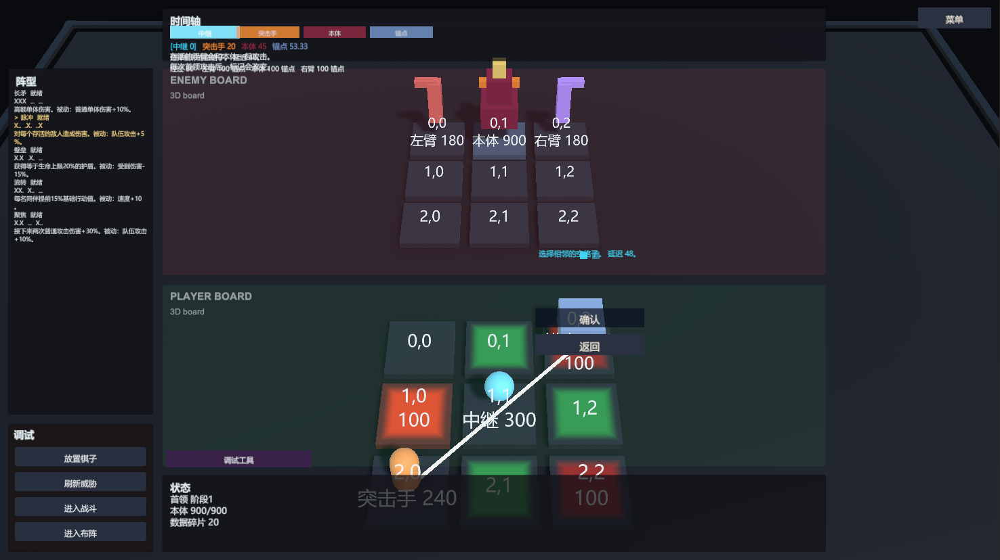
The first boss used fixed threat columns. It looked readable. The behaviour underneath was wrong. A simple attack-only bot won 45% of full-HP starts, and a light-movement bot won 40%. The fight was being solved more by the starting placement than by reading and moving during the fight.
After the switch to telegraphed 3 / 3 / 4 marks, with at least two safe tiles, attack-only dropped to 37% and the light mover reached 85% across the same kind of repeated comparison. Movement became an answer instead of an extra step. These are simple policies. They are not a substitute for human playtesting.
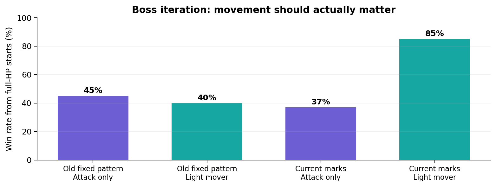
The game asks the player to watch position, threat, formation, and timing at the same time. I do not think the answer is one giant rules page. I would rather teach the pieces one at a time, then keep the same information visible when the real run begins.
The tutorial is a controlled Stage 1 fight. It limits what can be pressed at each step, and everything still uses the real rules. Place the team, attack and see the push directions, take a hit, move, form Spear, use an item, block, and reach the shop. Near the end it says what a real stage is asking for: groups keep coming while time remains, a new formation in each group can add score, and going down costs score and stage time. When Spear appears, the formation key is on screen too. An occupied cell, an empty cell, and the fact that turning or flipping the same shape still counts.
I still did not want the game to become unreadable if someone skipped the tutorial. A lot of the surface is familiar from other turn-based games. The timeline shows turn order. The buttons say Attack, Move, Swap, Block, and Item. Red cells mean danger. Completing a formation gets a sound and a visual response. The tutorial is more useful for what is different about Core Shift: position, formation, and timing keep affecting each other.
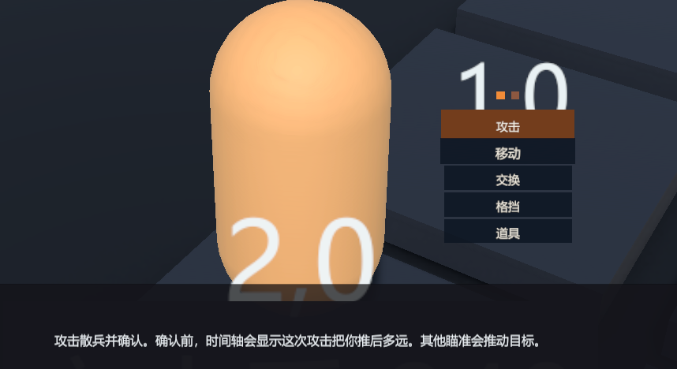
Once the controls make sense, the harder part is reading how the systems interact. I would rather turn recall into recognition. I do not want the player memorising a page of rules if the interface can show the important part when the decision actually comes up. The same idea shows up in my Currency Wars write-up.
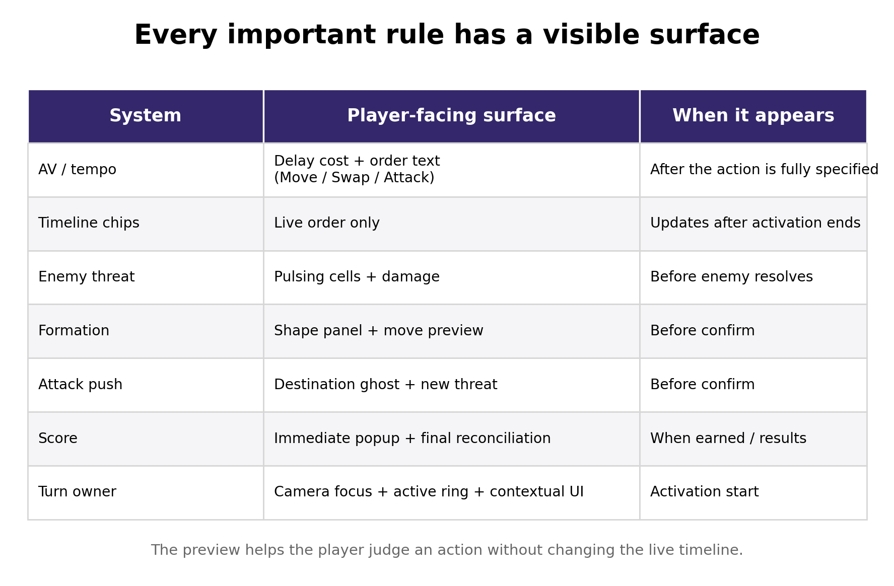
The timeline is the clearest example. The chips show the current order and each actor’s AV. Hovering a command shows the cost before commit. Threat cells use the same shape in preview and when the attack resolves. The formation panel keeps the shapes and the active state visible. The command buttons stay labelled, not icon-only.
The interface should carry the memory and the arithmetic that are not fun to do by hand. It should still leave the judgement to the player.
When a character becomes active, the camera and an active ring show whose turn it is without hiding either board. A selected target stays highlighted, so it is still obvious what Confirm will do. After Confirm, the result plays as a short sequence: anticipation, hit, damage number, displacement, then the threat update, instead of everything landing on the same frame. Boss phase changes use a banner and keep the overview camera, so the board stays readable. Outgoing damage is warm, incoming damage is red, and a fully blocked hit still shows 0 so the attack does not seem to vanish.
Simplified Chinese is the language the game starts in. English is in Settings. UI text uses shared IDs, so the same rule can be read in either language. The interface was laid out from a 1920×1080 reference, with anchors and scaling so the important controls stay on screen.
I split the project by responsibility instead of by screen. I wanted each rule to have one owner. The presentation layer can show a result. It should not quietly invent a second version of the combat rule underneath it.
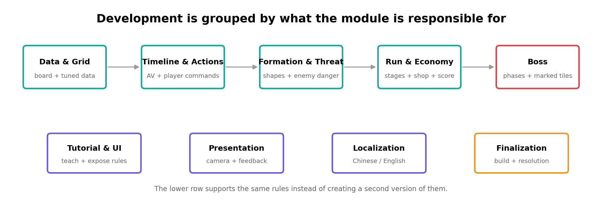
| Module | What it contains | Why it is separate |
|---|---|---|
| Data & Grid | Character and enemy values, the 3×3 logical boards, setup placement. | One place for tuned values and legal board state. |
| Timeline & Actions | AV order, two action slots, Move, Swap, Attack, Block, and Item. | Owns timing and command legality. |
| Formations & Threat | Shape matching, actives and passives, normal enemy danger. | Owns the two spatial rule sets. |
| Run & Economy | Stages, Assault Time, carried state, shop, inventory, and score. | Owns decisions that persist beyond one action. |
| Boss | Parts, phases, marked tiles, the safe-tile floor, and arm return. | Reuses combat rules, and owns boss-specific pressure. |
| Tutorial & UI | Tutorial flow, command UI, formation panel, timeline, and results. | Teaches and exposes rules. Does not own them. |
| Presentation | Camera, action timing, VFX, audio, and feedback. | Makes a resolved outcome readable. |
| Localization | Chinese and English text IDs, and layout checks. | Keeps the rule text consistent in both languages. |
| Finalization | Standalone build and resolution adaptation. | Keeps the build separate from the gameplay rules. |
I decided the module boundaries first, then used Cursor inside those boundaries to help with implementation and refactoring. That worked better for me. I could ask it to solve a smaller problem without letting whatever was easiest to code become the design.
The demo is small on purpose. I care more about whether the few systems push against each other than about whether the feature list looks long.
There are no critical hits, no random normal-damage rolls, no Defense stat, no character-specific ultimates, no skill trees, no elemental reactions, no procedural maps, no exploration, and no meta progression. I also skipped a free camera and a full humanoid animation pipeline. Any of those could make sense in a bigger project. Here they would mostly give me more things to finish without making the core question clearer.
I had limited time to tune the demo, and I could not put it in front of a proper group of outside playtesters. I already know every enemy pattern, every formation, and most of the small tricks. If I balance only around myself, a first run becomes harder than I think it is. I leaned the difficulty a bit easier on purpose. I would rather a first run reach the boss and the results screen, and see the whole system, than get stuck before the interesting parts show up. Better play still matters through score, remaining HP, how many groups are reached, and how strong the run becomes. Most of the time a run should be winnable, and playing more effectively still grants a higher score. Someone can finish. Someone who explores the options gets the higher number. That is one of the reasons I like a high score.
I still played full runs myself, mostly to check readability, pacing, and whether a choice made sense before I confirmed it. For repeated balance checks I also used AI to help make a simple bot that could compare very basic behaviours, such as mostly attacking versus moving when the danger called for it.
The useful part was repetition. The bot could run the same comparison far more times than I could by hand. It cannot tell me whether something feels intuitive, whether the tutorial is annoying, or whether a decision is satisfying. I used it as a balance check, not as a replacement for players.
The boss was the clearest example. The first version looked fine when I played it, and the repeated comparison showed that moving was not actually helping. That pushed me to change the targeting rule instead of only raising or lowering HP and damage. The question I want from testing is whether the system rewards the behaviour I designed it around.
What I focused on was not any one mechanic. It was the feeling of one small move that makes several things click: completing a formation, changing the threat, spending less time than an attack would have.
That is why the project stayed small. The 3×3 boards, three stat-based characters, learnable normal enemies, and one shared AV clock already give those interactions room. The boss then adds uncertainty without throwing away the same language of visible danger and movement.
The boss redesign was the most useful part of making the demo. The first version was readable, and the numbers showed it was rewarding the wrong behaviour. Changing one targeting rule made movement matter much more, without rebuilding the rest of combat. That is the systems problem I wanted this demo to explore. I want a run to be finishable, and I still want the higher score to belong to the player who figures the board out. If that player can say why a good turn worked, and can see the cost of a bad one, the system is doing what I wanted.
| Category | Current values |
|---|---|
| AV | Base AV = 10000 / Speed. Enemy delay = 1.00× Base AV. Attack 1.00, Move 0.60, Swap 0.75, Item 0.70, Block 0.75. |
| Party | Striker 240 HP / 100 ATK / 100 Speed. Relay 300 / 70 / 125. Anchor 420 / 80 / 75. |
| Block / revive | Block reduces damage by 50% until the next activation opens. Revive at 10% Max HP, minimum 1. Down = −300 score. Stage 1 and 2 also lose 100 Assault Time. |
| Stages | Stage 1: 450 Assault Time, +90 per clear, four groups. Stage 2: 420, +90 per clear, HP ×1.35, damage ×1.20, Speed +8, four groups. |
| Economy | Normal kill +100 score and +5 shards. Heal 20. ATK upgrade 40. Speed 40. Max HP 30. Items 25. Two consumable slots. |
| Items | Repair Kit heals 30% Max HP. Power Cell: next normal attack +30%. Overclock: next action delay ×0.7. |
| Formations | Formation Power is the average current ATK of the three characters. Spear 1.8×, and it benefits from its +10% single-target passive. Pulse 0.65×, with +5% team ATK already included. Flow’s +10 Speed changes Base AV while held. Actives refresh on each new normal group, and after each boss body attack. |
| Boss | Body 900 HP / 100 damage / 80 Speed. Arms 180 HP / 100 damage. Thresholds at 70% and 40%. Each living part marks 3 / 3 / 4 player tiles by phase. Overlaps stack. At least 2 tiles stay safe. Phase 3 damage dealt and taken ×1.5, and destroyed arms return. |
| Score | Formation +250 once per formation per group. Boss clear +500. Remaining HP = round(current / max × 100) per living character. Down −300. |
Related Currency Wars · a write-up of another game, about the same preference: show the decision when it matters, instead of asking the player to memorise it.
Questions soniclinxin@gmail.com · LinkedIn